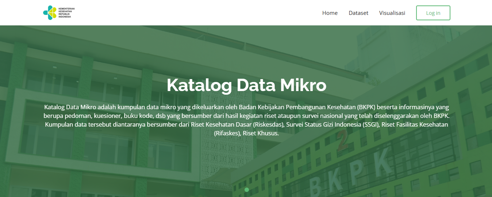
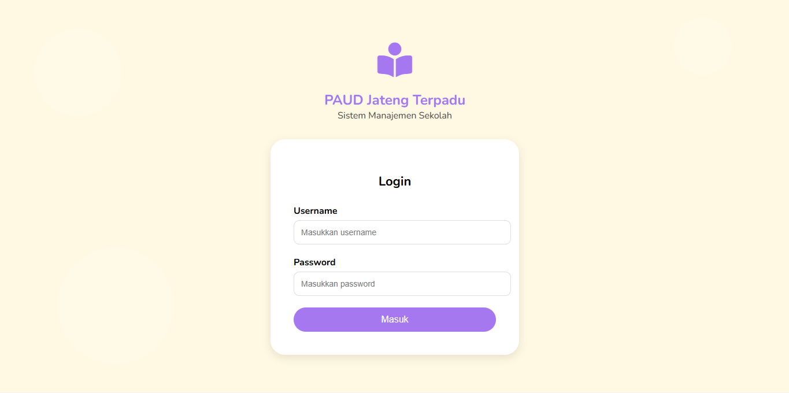

Bachelor of Informatics Engineering graduate from Universitas Borobudur with experience in website development, digital design, and social media management. Skilled in developing websites for government institutions, educational organizations, and various client requirements, covering the entire process from initial planning to implementation. Possess a strong understanding of data analysis using Microsoft Excel, SQL, and Power BI to support data-driven decision-making. Experienced in contributing to digital service development within an IT agency environment, demonstrating strong collaboration skills, client requirement analysis, and the ability to deliver effective and impactful digital solutions.
🎓 Universitas Borobudur
💻 Teknik Informatika
📊 GPA 3.24
Selected Projects

Contributed to the development and maintenance of a healthcare information data center website by implementing new features, conducting system testing, managing data, and resolving technical issues to improve system performance and reliability.

Collaborated in the development of an early childhood education information system website, supporting the management of school data, teachers, students, learning modules, and academic performance reports through an integrated digital platform.
Tools, technologies, and skills that I use in my work.
Certifications and achievements that support my professional journey.
Download my latest Curriculum Vitae to learn more about my education, experience, certifications, and professional skills.
Download CV